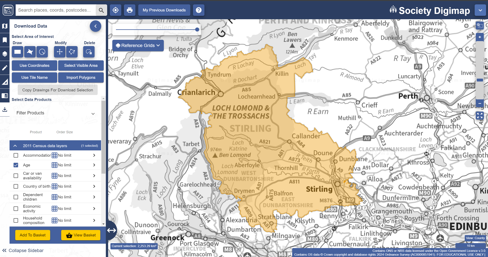
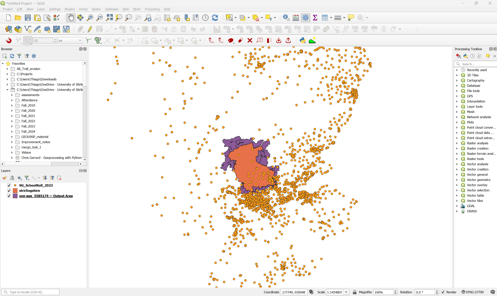
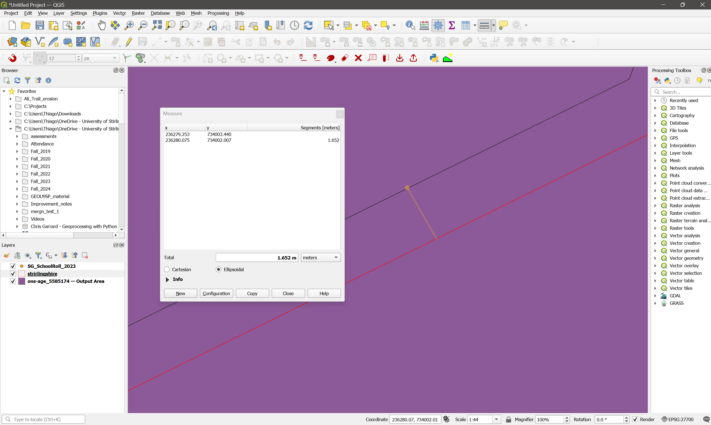
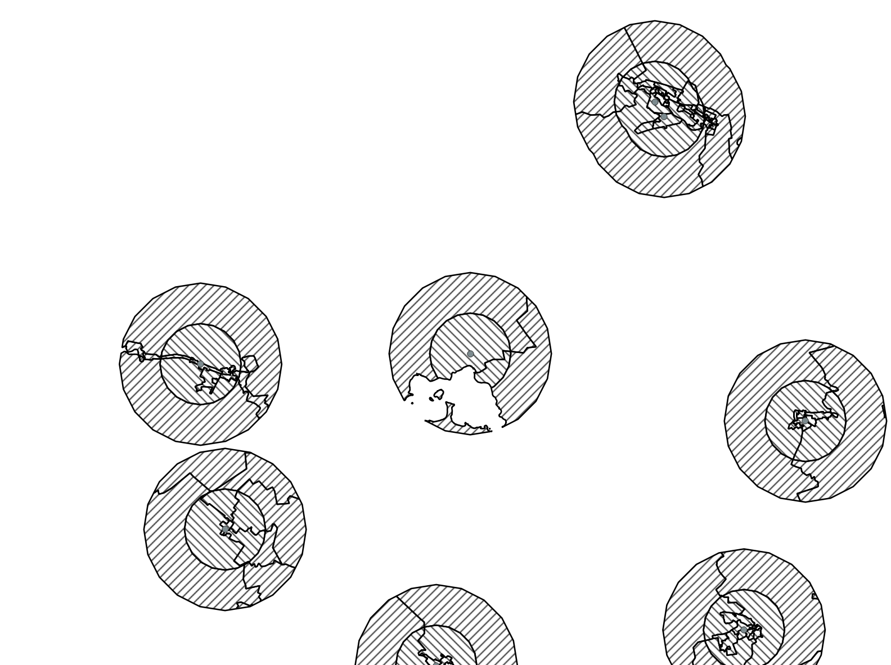

7 Lab 9: Geoprocessing tools
7.1 Guided Exercise: assessing children access to schools
You are a GIS analyst at the Stirling council, and you have been asked to perform an analysis regarding children access to schools. Your manager has indicated which data sources you should use, and they want you to answer how many children within the relevant age range live within less than 1km, between 1km and 2km, and further than 2km of any primary (4 to 10 years old) and secondary (11 to 17 years old) school. You have been instructed to use the census data at the most detailed level (Output Area, OA), and to limit your analysis to the OAs and schools that are within Stirling Council Area limits. You should report the results as a table.
7.1.1 Obtaining the data
- The first piece of data needed for this exercise is of course the limits of the Stirling Council Area. The official administrative boundary data for the UK is contained within the Ordnance Survey Boundary Line dataset. It can be downloaded from the Ordnance Survey Open Data Hub or from Digimap, but the files cover all of the UK, and thus are a very large download. To save precious lab time, we have already isolated the Stirling Council boundary as a separate file that you can download here. You are welcome!
You can then download the two other datasets needed:
Scottish School Roll and Locations: this dataset is provided by the Scottish Government, and contains information on all Scottish schools. Download the ‘Scottish School Roll and Locations ZIP’ (NOT the one with ‘Table’ on the name) from here.
Census data on population age: the Digimap platform offers access to the 2011 Census variables in spatial format. To obtain it, go to the Society tab, and then select the ‘Download’ option on the leftmost toolbar (a down arrow going into a ‘box’). That will bring up the familiar Digimap download interface. This time we will use our Stirling Council shapefile to set the search area. For that, click on the
Import Polygonsbutton, and then onChoose File. Then choose the zipped Stirling dataset you have downloaded and click on import. Finally, under the2011 Census data layerstab, select theAgedataset. Your window should look like this:

The data for the 2022 census have been officially published by National Records of Scotland, but are not available on Digimap yet. Since we are only practising our GIS knowledge, it is OK to use mismatched data (schools from 2024 vs. age data from 2011). In a real application scenario, it would be very important to make sure the temporal coverage of the datasets matches as well as possible.
- Add your data to the basket and finish the order, then download the data as you have done in previous labs.
- Now create a folder structure for your project and extract and organise the contents of the three datasets. Then create a new QGIS project and import the three datasets. The census geopackage will contain layers for different levels of aggregation, remember you want the Output Area polygons. If everything worked correctly, you should have something like this:

What are the data models and file formats of each dataset?
What are the attributes contained in each dataset?
What is the CRS of each dataset? Are they all the same?
7.1.2 Preparing the data
You may have noticed that your Digimap census data download includes many OA polygons that are outside of Stirling Council. This is because of a (sadly) very common problem with spatial data from different sources - the census output areas (OAs) do not perfectly line up with the administrative boundaries of the council. So when the Digimap interface tries to determine which OAs overlap with Stirling, we get more data than we need.
- Set the symbology of the Stirling boundaries to a red outline without fill. Then make sure this layer is on top of the census layer. Then zoom in very close to the Stirling boundary. You will see they are offset by about 1.5m:

We thus need to further subset our data to match the actual extent of the Stirling coucil.
What are the options of GIS operations that you have to subset the datasets?
After consulting with your manager, you both decide that clipping or intersecting the data would not be a good option as it would change the geometry of the OAs, and there are official limits. So you decide to use Select by Location:
Go to
Vector > Research Tools > Select by Location...or click on the button.
button.Select all polygons from the census layer that
are withinthe Stirling bounds layer. Check the selection results.Change your criteria to include both
intersectandare withinthe Stirling bounds layer. Check the selection results.
Why both selection attempts give you wrong results? How would you fix it?
You could manually deselect the polygons that are not part of Stirling council, but then you have an idea: what if you buffer the Stirlingshire boundaries to expand them a tiny bit, and then try selecting the polygons within the buffer. That way OAs inside the council area that slightly extend outwards will fall within the buffer, while OAs outside the council area that slightly extend inward will still not be fully within it.
Go to
Vector > Geoprocessing > Bufferand create a 20m buffer around the Stirling layer. You can just leave it as a temporary layer, as we will only use it for our spatial selection.Now repeat the
Select by locationoperation for OA polygonswithinthe buffered area. Bingo!Save the selection as a new layer by right clicking on the census layer name and selecting
Export > Save Selected Features As... Once this new census layer is added to your project, remove the original one to avoid confusion.
7.1.3 Answering the question
Now we can answer the actual study question. As a reminder, it is how many children in the relevant age range live within less than 1km, between 1km and 2km, and further than 2km of any primary (4 to 10 years old) and secondary (11 to 17 years old) school?. You will need to use some of the Geoprocessing tools you just learned to answer that, as well as tools from previous weeks.
Before you continue, try to think about the solution yourself. Look at the attributes of each layer, and then try to sketch a step by step plan to achieve the results you need. Then continue.
You will first need to add up the number of children at each 1yr age bracket to compute the totals for the primary and secondary school age ranges (4-10 yo and 11-17 yo). For that, you can use the
Field Calculator, as in previous labs. Just add up the numbers for columnsage_4toage_10into a newage_4-10column, and then add columnsage_11toage_17into a newage_11-17column.Then you will need to select only the schools within the Stirling council area. You can use
Select by locationas above, using the Stirling bounds, or by using theLAnamefield in the attribute table of the School Roll layer. Both methods should give you a selection of 48 schools. Create a new layer containing just these schools, then remove the original school layer from the project.The next step is to calculate the area covered by each distance bracket (1km, 2km) from the schools. For that, you should create a
Bufferfor the 1km distance, then a secondBufferfor the 2km distance. Make sure you select theDissolve resultoption when creating the buffers, since many locations will be within less than the specified distance from multiple schools, and we don’t want to repeat them.Then compute the
Differencebetween the 2km and 1km buffers to create “rings” covering the range of 1km to 2km. This is important so we don’t “double count” the 1km bracket - see below.
Now you have to deal with the biggest limitation of your analysis - the OAs are still very big, and many will span areas both within and outside the 1k and 2km distances. You discuss the problem with your manager again, and you decide that the best approach is to weight the children count of each OA by the respective area of the OA that is within each distance bracket. So if an OA has 15 children aged 11-17, and 40% of the OA area is within 1km of a school, then you should multiply 15 by 0.4 to obtain the estimated number of children within 1km.
- The first step is to calculate the total area of each OA. You can do that by using the
Field Calculatortool and creating a new field calledoa_areathat takes the$areaparameter under theGeometrycalculator operations. Remember to make this new field a Decimal number with two decimal places.
What units were used for the area calculation? Does it matter?
Now that you have the total areas for each OA, it is time to find out the portions within each distance bracket. For that, we can either Clip or get the Intersection of the buffer layers with the census layer.
What will change in your results if you use Intersection instead of Clip?
- Since the buffers have been dissolved, they can’t be linked to individual schools anymore - whenever the buffers of two schools overlap their attribute tables will just keep the name of one of the schools when they are dissolved. So no need to preserve the buffer attributes, and we can use
Clip. Create two new layers, the first being the clipping of the census layer by the 1km buffer layer, and the second being the clipping of the census layer by the 1km-2km ‘donuts’ layer. We use it instead of the 2km buffer otherwise when we calculate the percentage of area within 2km we will be double counting the area within 1km - which is already covered by the 1km buffer.
You should end up with something like the figure below. To make sure the layers don’t overlap, style them using hatching in different directions. If you see a cross-hatch, then they are overlapping, and it means you used the full 2km buffer instead of the 1km-2km ‘donut’:

Now we can calculate the area percentages. First, re-calculate the polygon areas for the clipped layers, using the
Field Calculator. Create a new attribute calledclip_area, and assign the$areaoperator to it again. Remember to set it as a decimal number.Still using the
Field Calculator, you can now calculate the percent area by creating a new attribute calledperc_area, which will beclip_area / oa_area. It should also be a decimal number.Finally, calculate the weighted number of children by creating new fields. First calculate
perc_4-10asage_4-10 * perc_area, and thenperc_11-17asage_11-17 * perc_area. These fields should be integers, unless you are sending partial children to school.
Great, you are almost there! The last step is to aggregate all the data at the council level, and then also determine the number of children beyond 2km:
Use the
Statistical Summarytool to calculate the respective sums ofperc_4-10andperc_11-17. These are the final answers for how many children in the relevant age range live within less than 1km, between 1km and 2km?.To get the number of children beyond 2km, use the
Statistical Summarytool to calculate the total number of children within each age bracket (age_4-10andage_11-17) in the council, and then subtract the number of children within 1km and between 1km and 2km from this total.
Your final results should be:
| 1km | 2km | >2km | |
|---|---|---|---|
| Primary | 6451 | 6656 | 89 |
| Secondary | 7572 | 7880 | 91 |